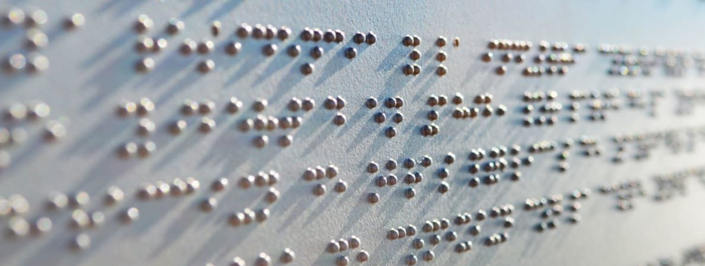

David Yuchen Wang
Hello! I studied Engineering Physics in my undergraduate at UBC. Now, I am an AI enthusiast pursuing my masters degree at NUS, Singapore. I am passionate to explore real-world applications of machine learning, especially in areas that can positively impact people's lives.
Projects
CoreDiffuse
iOS App using Stable Diffuision for local image generation, optimized with CoreML
SwiftUI
Diffusion Models
iOS Development
CoreML optimization

Robotic System for precision Bioprinting
Construction of an industrial robot with 3 degrees of freedom
C#
Robotics
Industrial Design
Latent Space Inference For Spatial Transcriptomics
Using Variation Autoencoders to understand cellular composition
Python
Variational Methods
Single Cell RNA Sequencing
Wheel Design for farming robot!
Designing and building a 4-wheel drive system for autonomous farming robot
Onshape 3D CAD
Mechanical Design
Machining

Holiday Fractals!
Generating some holiday cheer through the use of random walks
Python
Numberical Physics
Random Walks

Fun with Waves!
Numerical solutions to the time dependent Schödinger equation
MATLAB
Numberical Physics
Crank Nicolson Scheme FDA
Physical Simulations

Robot Navigation using OpenCV
Computer vision techniques for autonomous agricultural robot navigation
OpenCV
PID Control
Computer Vision
ROS
Gazebo
Recycling Robot
Autonomous can-recycling robot, built from scratch!
OnShape
Soldering
Self Driving AI Robot
AI controlled robot simulation to recognize license plates and drive autonomously
Keras
Python
ROS
Gazebo
Chaotic Rhythms of a Dripping Faucet
Who knew that a leaky tap could exhibit such beautiful and chaotic behaviour
Physics
Chaos
Python

The Thompson Problem
Finite Difference Approximations in Numerical Physics
MATLAB
Numberical Physics
Finite Difference Approximations
Data Fitting

Acoustic Levitator
Levitating objects using the physics of sound!
Arduino
Electrical Design
Soldering

CPSC 425 - Computer Vision
Exploration of various computer vision techniques
Computer Vision
Python

SIFT App
Shift Invariant Feature Transform
Computer Vision
PyQt5

Braille-ify
Hackathon Project!
Java

Web Development
Personal website!
HTML
CSS
Bootstrap
JavaScript


Publications
Accelerator Tuning With Deep Reinforcement Learning
Neural Information Processing Systems (NeurIPS) 2021
During my time as a junior machine learning engineer at TRIUMF, I wrote and published this paper at the NeurIPS 2021 Workshop for Machine Learning and the Physical Sciences.
I also presented my poster at the Advisory Commitee on TRIUMF (ACOT) 2021
Experiences
May 2022 - Sept 2022
Python
AWS
Unsupervised Learning
Deep Learning
Image Classification
Semantic Segmentation
Pytorch
Figma
Jira
Machine Learning Engineer
Yakoa.io
- Implemented a state-of-the-art image segmentation framework using PyTorch based on research papers to detect fraudulent features in NFT images.
- Deployed self-supervised classification models on AWS instances and fine-tuned models on a dataset of 8 million images, boosting training speed and accuracy.
- Performed statistical analysis of the latent embedding space of self-supervised classification models to optimize hyperparameters and visualized results using Weights & Biases dashboards, leading to improved model validation accuracy.
- Utilized Figma to design template for company website
May 2021 - Dec 2021

PyTorch
Weight and Biases
Reinforcement Learning
Accelerator Physics
Policy Gradient Methods
Research
Python
Bash
Junior Machine Learning Engineer
TRIUMF
My time at the TRIUMF facility helped me grow my skills in software and AI. Some of my notable acheivements:
- Designed simulations for beamline physics in order to train state-of-the-art policy gradient reinforcement learning models. Successfully deployed and tested the first ever AI-controlled beamline tuning interface on the TRIUMF particle accelerators.
- Wrote and published paper Accelerator Tuning with Deep Reinforcement Learning and gave poster presentation at NeurIPS 2021 Workshop.
- Utilized a combination of object-oriented programming, Python multi-threading, custom shell scripting, and multi-GPU optimization to boost training time and improve usability of deep reinforcement learning architecture.
- Built user interface in Python and Tkinter to communicate with the Experimental Physics and Industrial Control System (EPICS) for real-time beamline data-transfer and tuning.
Jan 2020 - May 2020

PyTorch
Tensorflow
Scikit Learn
Deep Learning
Oject Detection
Docker
Conda
Bash
AI Research Intern
Huawei
- Improved data-preprocessing speeds for image datasets by many orders of magnitude through designing custom scripts in Python and Bash.
- Boosted team productivity by configuring custom environments in Docker to allow for research models to be trained through Huawei cloud GPU APIs.
- Finetuned a myriad of deep-learning models for image classification and object detection in Tensorflow and PyTorch. Documented and presented findings to the team, leading to improvements on model accuracy.
Sept 2021 - Dec 2021
Teaching Assistant
UBC ENPH 353
- Machine Learning Project Course
- Helped student troubleshoot errors in the lab
Sept 2021 - Dec 2021
Teaching Assistant
UBC PHYS 159
- Guided student through Laboratory physics experiments including concepts in resistors, capacitors, and arduinos
- Marked weekly labs books of students
- Provided tutorials to teach laboratory material to students
Sept 2018 - Dec 2019

Altium Designer
STM Microcontroller
Circuit Design
Electrical Subteam Member
UBC Formula Electric Design Team
Designed a Reflow Oven and designed PCB boards for the Brake Light Module for the competition vehicle.